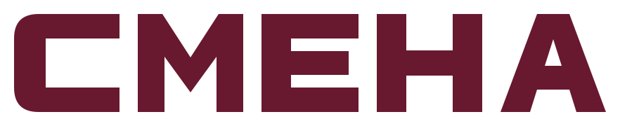
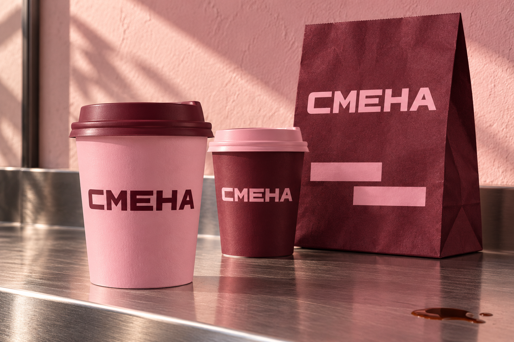
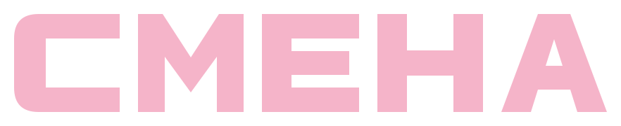
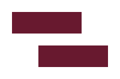
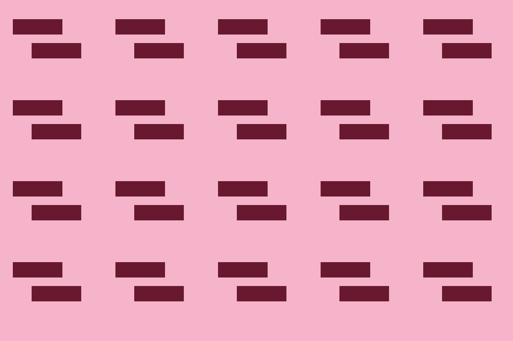
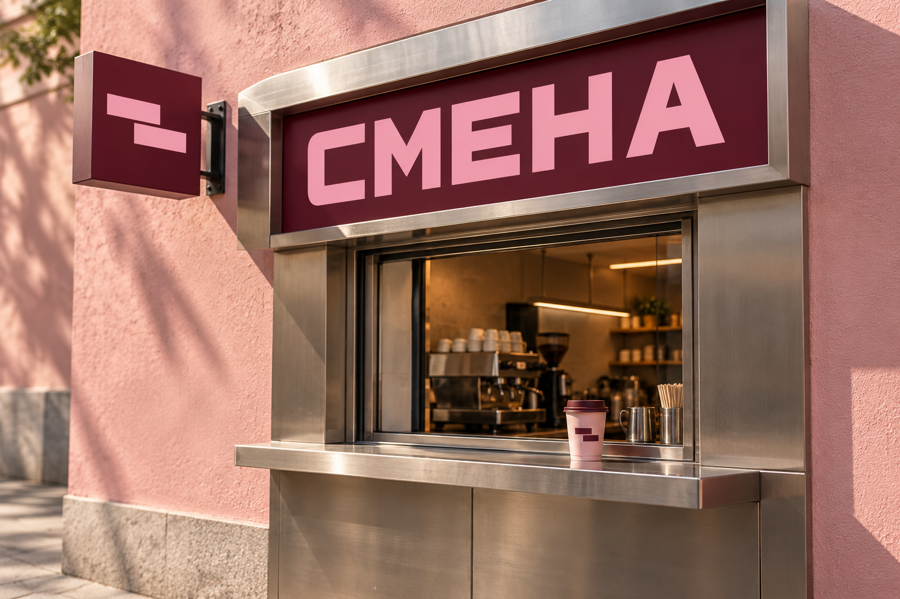

Модельный бриф
Маленькая остановка
в большом городе.
«СМЕНА» — вымышленная кофейня навынос для людей, которые идут на работу, встречу или прогулку. Задача — создать узнаваемый стиль для небольшого пространства и простых ежедневных носителей.
Крупное геометрическое начертание рассчитано на короткий контакт: увидеть вывеску, узнать стакан, запомнить название. Контраст винного и розового объединяет носители.
Основы стиля
Прямой характер.
Тёплый контраст.

Обратное сочетаниеБуквы как конструкция
Пять букв построены из плотных прямых форм. Скруглённый внешний угол «С» смягчает рисунок, а просветы сохраняют читаемость.
Знак со смещением
Две полосы сдвинуты относительно друг друга. Это простая графическая интерпретация смены направления и ритма дня.
Векторные оригиналы
Логотипы, знак и паттерн выполнены в SVG. Буквы — контуры: файл можно масштабировать без установки шрифта.

Самостоятельный знак
Палитра RGB
Четыре цвета.
Два главных.
Наборный шрифт
Golos Text
Для меню, подписей и коротких сообщений. Заголовки — 600–800, основной текст — 400–500. Логотип имеет собственное начертание и не набирается шрифтом.
Твоя смена
начинается
с кофе.
Аа Бб Вв Гг Дд Ее Жж Зз
0123456789 / Кофе с собой
Стиль в пространстве
Узнать с другой
стороны улицы.

Концептуальная визуализация вывески. Производственные размеры и крепления не проектировались.
Короткие правила
Чтобы стиль
оставался цельным.
- Свободное поле
- Оставляйте вокруг видимых контуров логотипа не меньше ¼ высоты букв. Встроенные поля SVG не заменяют это расстояние.
- Минимальный размер
- Для этой концепции: ширина слова от 160 px, отдельного знака — от 32 px. На физическом носителе проверьте пробный оттиск.
- Фон и пропорции
- Используйте показанные цветовые пары или одноцветную версию. Сохраняйте пропорции; избегайте теней, обводок и пёстрого фона.
- Подготовка к печати
- Исходники заданы в RGB. Цветоделение, вылеты, развёртки и проба на материале выполняются под требования выбранной типографии.
Материалы кейса
Стиль, который
можно забрать с собой.


Самостоятельный модельный проект портфолио. Бренд вымышленный. Логотип и графика созданы в векторе; изображения упаковки и фасада — генеративные визуализации, а не фотографии реализованного заказа. Проверка товарного знака, производство и измерение коммерческих результатов не проводились.